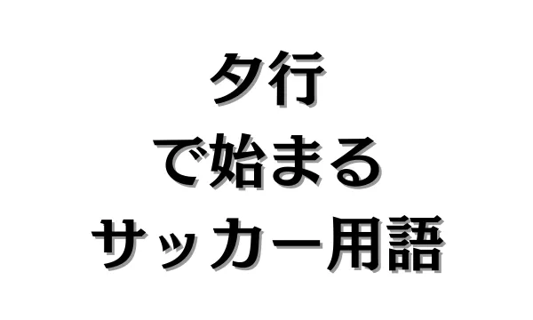
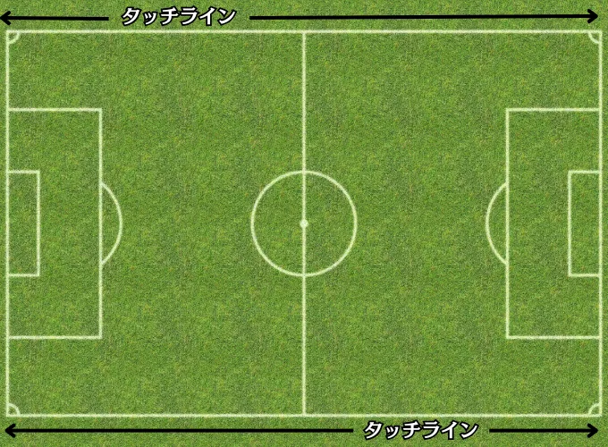
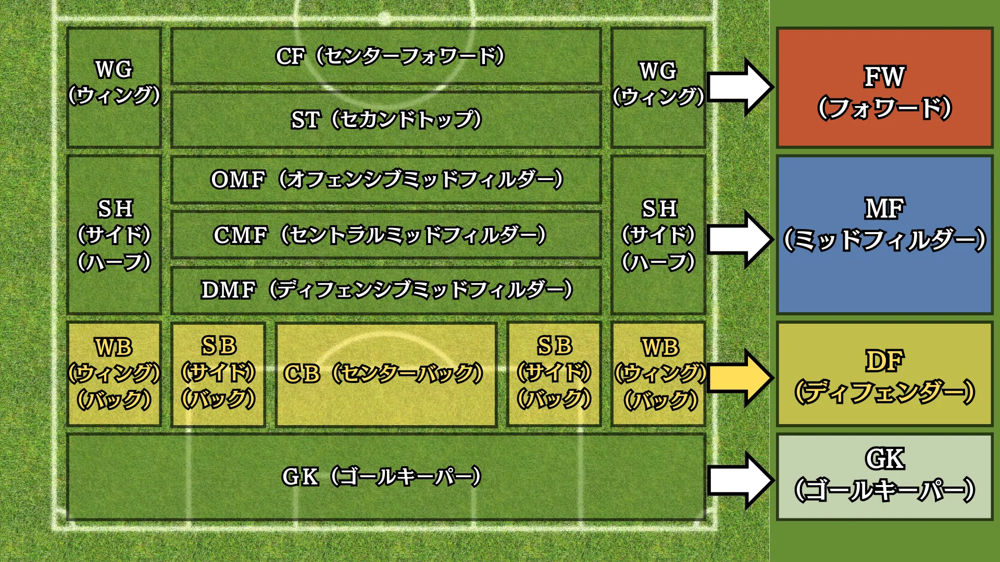
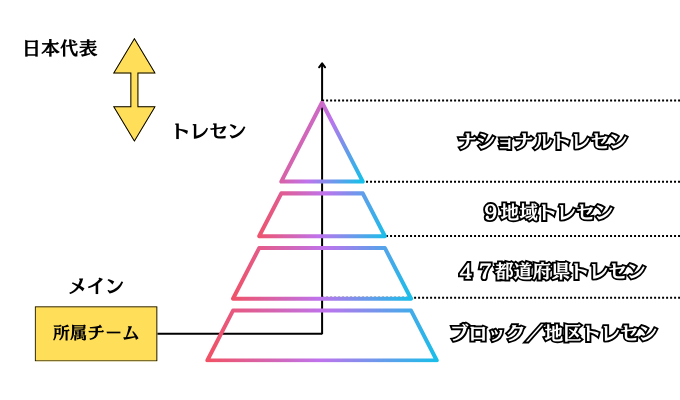

タ行で始まるサッカー用語


目 次
1. タで始まるサッカー用語。
ダイアゴナルラン【★★★★】
ダイアゴナルランとは、サッカーで用いられる動きの一種で、斜め方向に走る動きのことを指します。
主に攻撃時に相手DF（ディフェンス）を突破、または引き付けて自チームの選手にスペースを与えることを目的とします。
タッチライン【★★】

タッチラインとは、ピッチを囲むラインの一種で、長辺のラインを指します。
ボールがタッチラインを超えると、プレーが中断し、最後に触った方の相手がスローインをして試合再開となります。
2. チで始まるサッカー用語。
チェックの動き【★★★】
チェックの動きとは、ボールを受けるための予備動作の一種で、一度受けたい場所の逆方向に動いてから素早く切り返し、ボールを受ける方向に動くことを指します。
裏へ抜けたいときや足元で受けたいときに有効です。
3. ツで始まるサッカー用語。
ツで始まるサッカー用語が思いつかないので、お問い合わせページからアイデアを下さい。
4. テで始まるサッカー用語。
DF（ディフェンダー）【★】

DF（ディフェンダー）とは、ポジションの一種で、守備的な選手のことを指します。
DFは守備的な能力だけでなく、ビルドアップ能力や戦術理解など攻撃的な能力も必須となります。
ディレイ【★★★】
ディレイとは、守備戦術の一種で、相手の攻撃を遅らせることを指します。
自チームの守備ブロックを形成するまでの時間を稼ぐという目的で、ボールを奪いに行くのではなく、適度な距離を保ちつつプレッシャーをかけ、相手に縦への突破や危険なパスコースを選ばせないようにします。
5. トで始まるサッカー用語。
トップ【★】
トップとは、ポジションというよりは役割・概念の一種で、FW（フォワード）を何人配置するのか、抽象的に決定する際に使います。
例えば、FWを1人、2人、3人配置したいときはそれぞれ、ワントップ、ツートップ、スリートップと抽象的に決めます。
その後、1人はCF（センターフォワード）、もう一人はST（セカンドトップ）など具体的なポジションを確定させます。
また、ゼロトップという役割・概念もあり、FWというポジションではありながらも、MF（ミッドフィルダー）の位置まで下がって攻撃を組み立てます。
トップ下【★★】
トップ下とは、ポジションというよりは役割・概念の一種で、攻撃的なMF（ミッドフィルダー）としてプレーします。
最前線（トップ）のすぐ後ろで攻撃を組み立てるだけでなく、DF（ディフェンス）ラインの背後に抜け出す動きも求められます。
つまり、MFでありながらも、FW（フォワード）的な役割も果たさなければなりません。
トランジション【★★★】
トランジションとは、試合で必ず起こる現象の一種で、攻守の切り替えのことを指します。
トランジションは二種類あり、守備から攻撃に切り替わることをポジティブトランジションといい、攻撃から守備に切り替わることをネガティブトランジションといいます。
トレセン【★★】

トレセン制度とは、ナショナルトレーニングセンター制度の略で、日本サッカー協会（JFA）が実施する選抜育成プログラムの一環で、才能ある選手を発掘し、良い環境、良い指導を与えることを目的としています。
トレセンは複数の階層に分かれています。
１．ナショナルトレセン
ナショナルトレセンとは、最上位レベルのトレセンで、9地域トレセンから選抜された選手が参加するトレーニングプログラムです。
２．9地域トレセン
9地域トレセンとは、9つの地域（北海道、東北、関東、北信越、東海、関西、四国、中国、九州）に分かれており、47都道府県トレセンで高い評価を受けた選手が参加するトレーニングプログラムです。
３．47都道府県トレセン
47都道府県トレセンとは、各都道府県のトレセンで、ブロック／地区トレセンで高い評価を受けた選手が参加するトレーニングプログラムです。
４．ブロック／地区トレセン
ブロック／地区トレセンとは、県内の市、区、支部、ブロックなどに分けられたトレセンで、所属クラブで高い評価を受けた選手が参加するトレーニングプログラムです。